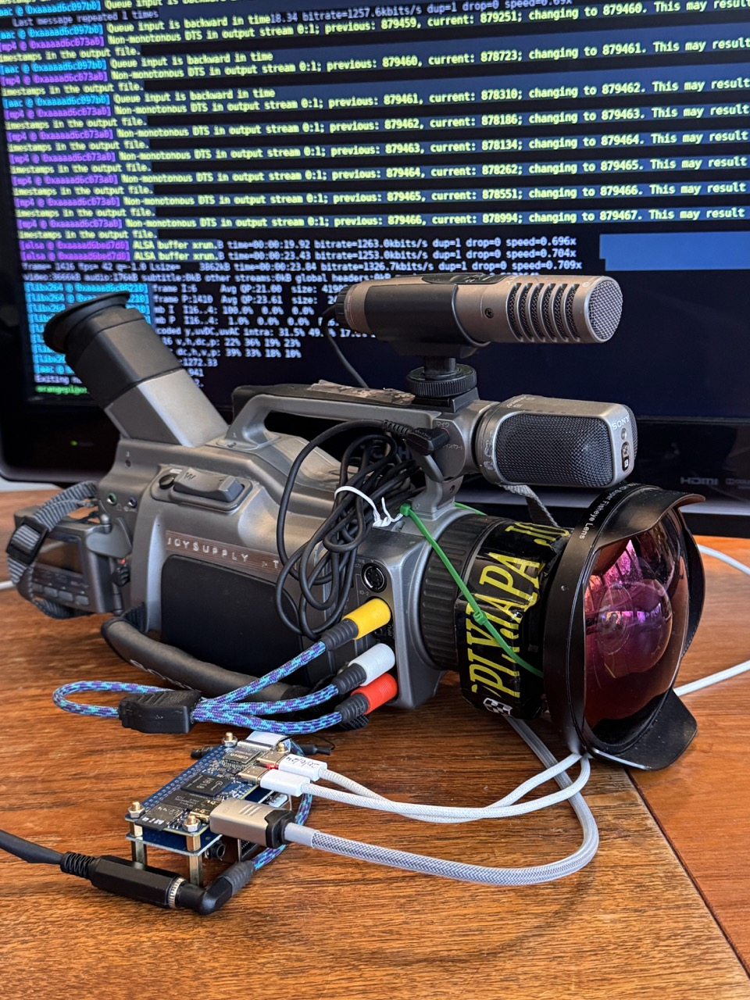

Joy-Cam.
2025-present.
Tape-based cameras have become increasingly popular for their unique analog aesthetic and sense of nostalgia. Fuelled by the explosion of online content sharing over the past decade, they offer a look and feeling that modern digital cameras simply cannot replicate. First available commercially to consumers in the early 80s, they are now aging devices. Their tape systems are built of complex internal mechanisms that are prone to wear, failure, and difficult repairs. While key components like lenses, sensors, and microphones are often still high quality and reliable, replacement parts are scarce, expensive, and usually only offer temporary fixes when sourced second-hand. At the same time, tapes themselves are becoming harder to find and more costly, adding further strain to a shrinking pool of usable cameras. Beyond that, using these cameras requires additional outdated equipment to capture, convert, and edit the footage, making the overall process more complicated and less accessible.
Joy-Cam provides a practical and seamless solution to extend the functional lifespan of tape-based camcorders without compromising their core imaging characteristics. By leveraging the affordability, miniaturisation, and processing power of single board computers, Joy-Cam replaces failure-prone tape mechanisms with a solid-state digital capture pipeline. This approach preserves the original optical and sensor output of the camera while eliminating reliance on aging mechanical components and obsolete recording media.
More on this project: https://www.instagram.com/p/DNki8C4Snxk/?img_index=1
